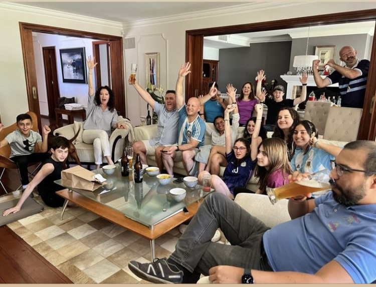
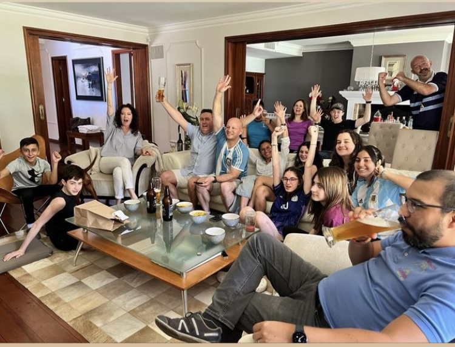
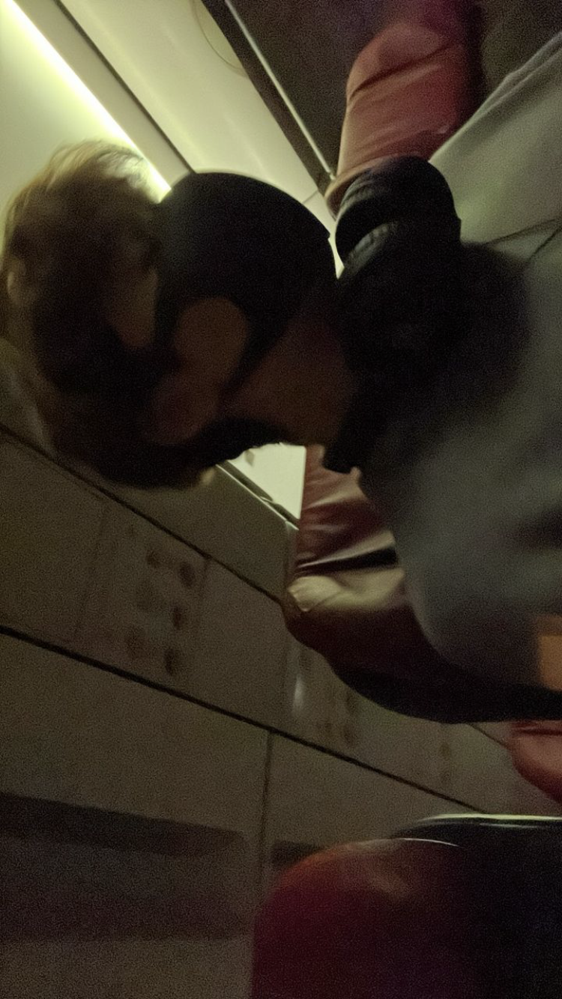
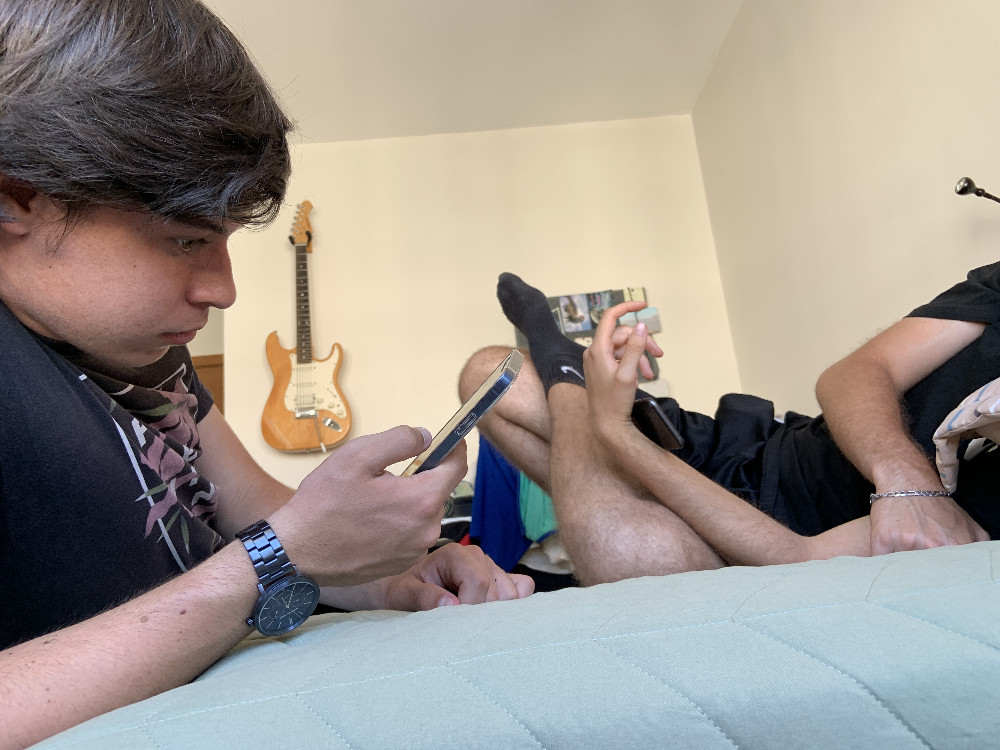
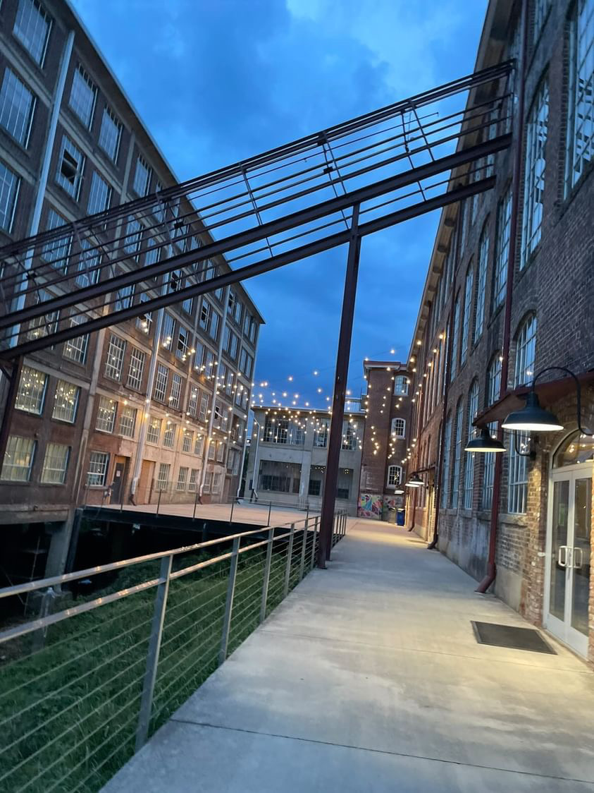
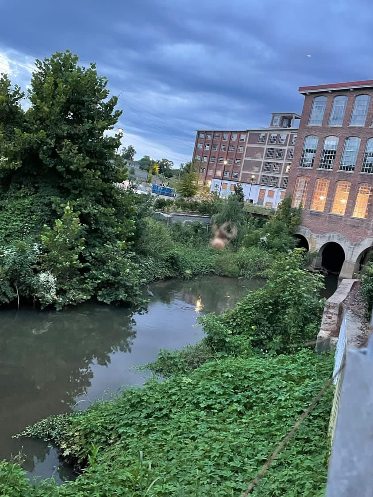
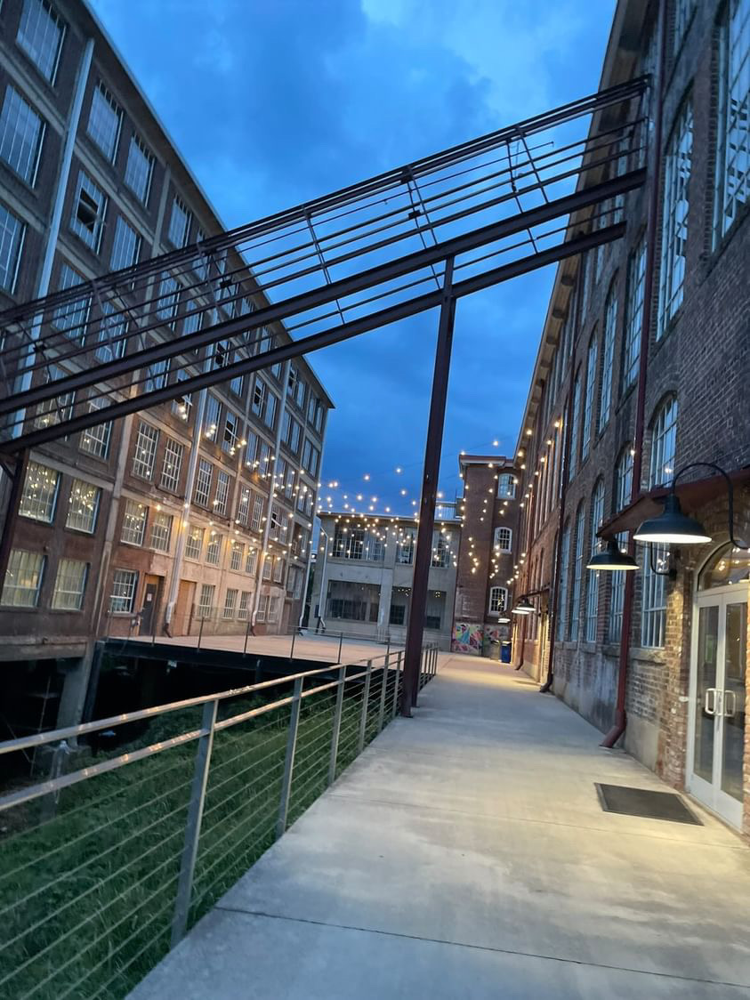
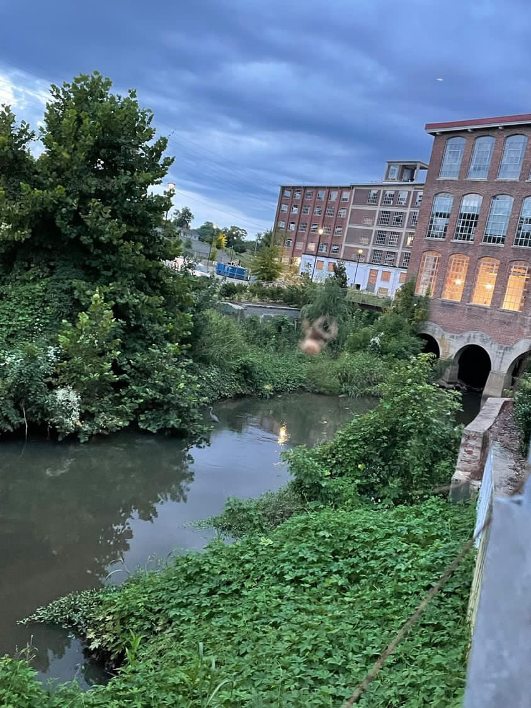
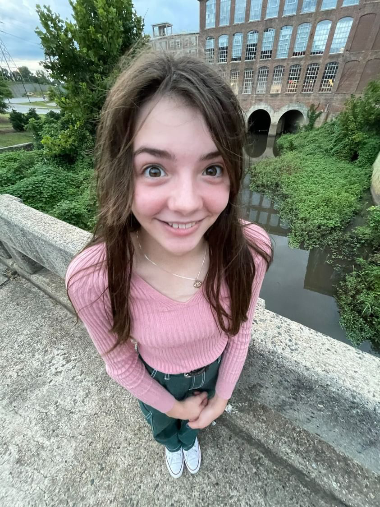
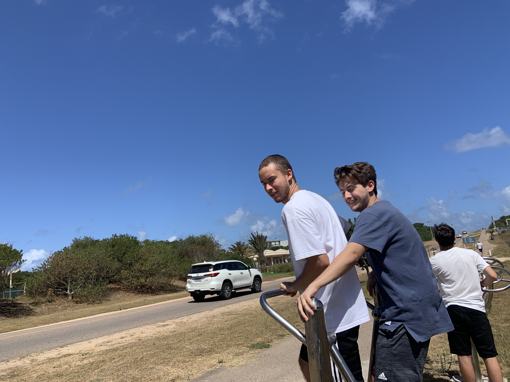

Break
A break from the IB where everyone gets to do stuff.
There were many concerts during these vacations, Marina, Valeria, and even Lia came to Uruguay at some point to visit their friends and be at the concerts. I didn't make any mention of concerts or anything because I wasn't there because I hate concerts.
Just know that at most times, it is highly likely that anyone is at a concert. Specially ever since 28/12/2022.
Also many of these events are known only because of social media posts, so some of them are not going to be detailed at all.
Eitoku and Martina go to Japan and spend lots of time together.
-
16/12/2022 3.00
Chiara, Mati and Angie are still on Martina's house, Chiara dances to gangam style.
San is still up at 3 in the morning, and he wants to play minecraft, so he sends a message throught discord, Mati and Bruno join, Bruno talks with them while Mati and San play the minecrarft new update. After a while Bruno leaves and Timo joins, this is when Mati finds himself in the deep dark, Timo and San follow him, Timo warns them not to make sound to avoid having to deal with the warden, but innevitably it gets summoned and it kills everyone. Timo then shows San his house and his contammination factory, Mati shows his house. Mati and Timo play a discord integrated game about football and then everyone leaves the call.
-
17/12/2022
Eitoku goes to Martina's house, he wonders off an Martina has to go find him .
-
18/12/2022
Argentina wins the world cup, everyone celebrates.
Argentinian People- Timo
- Ethan
- Natasia
 

Argentina wins, this is Uruguay so imagine what happened in Argentina
-
Beaches, Labs, and Names
Timo, Eitoku, Fede, and Ethan go to the beach, they talk about grades. Eitoku and Ethan went to the sea while the rest stayed in the sand. After that they talked about musicals, spcifically Heathers. They decided to walk from the beach to a Cafe near Alex's house. They went there and they ate something. They talked about the questions that where asked at Chiara's house.
Lupi had asked Fede if he was gay, and Fede said yes. And then many other people asked him an he said yes so he assumes the entire class knows. Timo brought up Dani's question, and how his answer was kind of strange. Then they left
Later that day, Alex added Lucas to the WWC groupchat, they had a debate over songs and wheather or not they should change the name of the group, the group kept it's name.
Then Lucas and Timo played minecraft, they tried finishing the contamination factory that Timo had built, but then a guy joined the server and started wrecking havoc, but Timo dealt with him.
Then Dani and Timo talked about how it was wrong for society to believe that it was wrong for a person to have more friends of the opposite gender. However Dani believes that this is just the way things are and not much can be changed, while Timo believes that you can go against society and be friends of whoever you want to be friends with. Then they talked about everyone has moments where they act more like themselves than usual. For example Dani has a lot of Dani moments.
-
24/12/2022
Lucas Invites
Lucas invited the WWC to his house. Timo is the first to arrive he gave Lucas a clover that he found on his way there. Unfortunately the clover got immediately destroyed accidentally but it was good while it lasted. they play passes with a football until Ethan and Fede arrive, theny they continue playing passes together until Eitoku arrives.
Then they all sit down and talk about different things. Like Fede's and Lucas' new phones, and Fede played pokemon violet, which has a really long introduction and one of the characters looks like Natasia Bethe which he does not like, Timo inquires why Fede does not like her, but he doesn't offer a straight answer. A long time ago, Nata wasn't invited to Fede's birthday party, but they didn't like each other that much before this either. However Timo assumed that it was because of the birthday stuff.
Then everyone orders food from McDonalds, Eitoku, Lucas, and Fede go to the pool, Ethan joins them but not before giving his phone to Timo, so that he could check the information about the order.
Everyone gets out of the pool and then the food arrives, everyone eats while Timo and Ethan play a game of chess, Ethan completely forgot how to play, then Eitoku played Timo.
After that all of them play UNO, and Eitoku wins 4 times in a row. Then they go upstairs and play ping pong. Everyone goes down except Timo who is teaching Ethan how to play ping pong. While the rest go to the pool again.
Ethan improved a lot in ping pong, he plays against everyone, he still loses, but he plays better now. Then everyone leaves.
After that, Dani revealed through discord that he got a new microphone, and he told everyone to join. San and Mati go in a call and they play chess, then Dani and Lucas join and everyone plays fortnite
-
25/12/2022
Megan does this cool tradition
.jpg)
.jpg)
Burning trees
-
28/12/2022
Salma's Birthday
Salma's birthday. She celebrates it with Angie, Chiara, Milagros, and others in Punta Del Este
Timo has a dream about Turner, soup, and an epic battle with an unexpected abrubt end.
Fede tells Timo his planning something that makes him anxious, but in a good way.
-
30/12/2022
Fede reveals what his surprise is, he posts something in instagram. All of the covers of the 50 books he recently read, Fede's books are very personal to him, so this took bravery.
Nata invites Timo, Constan, Lara, and other of her friends to a paintball competition. Constan can't attend.
-
30/12/2022
Paintball Time
After everyone arrives to the paintball place, everyone talks for a while about different things. Lara tells Timo how "Legally Blond" was chosen in the theatre club, she does not like that decision. Timo tells her that he was really hoping for people to choose CapeMan as the play. Lara tells Timo to send her the CapeMan play.
Then the rules are explained and everyone puts on the equipment, everyone is ready to rumble.
Teams where made Team 1- Timo
- Federico Berman
- Milagros (A friend Nata knows, not milagros from the class)
- Another girl whose name I forgot... sorry
- Nata
- Lara
- Tai
- Mr Berman (Lara and Fede's dad)
- A kid
A member of a team has to get to the opposing team's base. Both teams spend their time behind obstacles stalling waiting for the others to make a mistake until Timo gets bored and risks himself to try to get Mr Berman, however he fails and gets shot in the head. The round ends after that.
Round 2 - Get to the enemy baseIn the second round, Timo covers a lot of ground quickly and shoots Tai down, he then goes into a room where he finds Mr Berman both agreed not to shoot eachother and go back to their bases to revive, however there was a misunderstanding, Mr Berman did not go back to his base while Timo did, so Timo came back to the same room to find Mr Berman still there. This counted as 2 kills for the other team. Meanwhile Nata was shooting down the rest of the team with incredible skill the round ends and Mr Berman acknowledgedes Timo's bravery to cover a large amount of ground so quickly, yet questions why he entered the same room he was in twice. Timo explains he thought that both had been eliminated.
Round 1 - RaidOne team has the highground and only one life, the other team has to get to their base in time. Timo's team is the team with only one life. They played well and defensively, they were going to win, until Nata sneaked her way through the stairs with a shield, Milagros saw her but she did not want to shoot because she was too close and Milagros did not want to hurt Nata. So Nata's team wins. However because of Milagros' mercy, Timo considers this a win since they would have won if it wasn't for Milagros' mercy.
Round 1 - RaidThe team pushes forward, but they get stuck in the stairs, the stairs are too open, and the shield can't cover them enouph. Timo attempts to go up but finds it problematic because Lara is raining bullets directly above him, he retreats tactically through a window with the shield, he tells Milagros to take care of Lara while he goes up. Milagros does not do that, she instead charges with the shield above, but the shield can only shield 1.7 people, so Nata was capable of sneakily shooting Timo and then the match ended.
Nata gained the title of Marksman for aiming so well.
Timo was awarded the title of Bravery for daring to push forward even when the odds where not in his favour.
Later that day, Eitoku and Martina leave Uruguay to go to Japan.
Eitoku in a plane to Japan (Foto by Martina)
-
31/12/2022 - 01/01/2023
NEW YEAR
It is a new year, today Sofe went to Rome with his boyfriend, Juampi.
Fireworks are fired, resolutions are said. Martina and Eitoku are in Dubai, Sofe and Juampi are travelling to rome.
After the new year, Dani and Timo talk about many topics, from the prime minister of Lizz Truz to predictions for the future quarter, sleep paralysis, dreams about Turner, and many other things. They first talk about new years resolution, Timo says he that he is going to start trying in school and in life in general, while Dani will keep things as they are. He will just expand upon himself.
Dani eventually asks Timo to tell him about Eitoku, Timo tells him that Eitoku is really nice but Eitoku thinks that Dani might be racist, Dani asks why, and Timo responds that it's probably because of things Eitoku has heard about Dani. Dani said that it was probably Martina telling bad things about Dani to Eitoku. Timo said that Ethan also didn't like Dani and Ethan often speaks with Eitoku
Ethan doesn't like Dani ever since Foege's presentation where Dani did absolutely nothing to contribute. But Ethan also doesn't like some of the sexist jokes or comments that Dani does. Dani is well aware that Ethan dislikes him, however he finds it kind of dumb that he still holds on to that one time in history class. He says that the best course of action is to "let it be" arguing that he can't be liked by everyone.
Timo thinks that this problem needs a solution, while Dani believes that they should just let it be. The conversation deviated to Dani claiming that Anime portrays Japan as being better than what it actually is, even though Dani never went to Japan. Then Dani talks about bias is created by prejudices, he used Fede as the target example, him being gay affects everyone's views on him, when he is actually just a normal person.
Then, Dani and Timo talk about Dani's Camp Question to the girls. Timo told him that when he told Sofe what Dani had asked, Sofe immediately gave an answer, but Timo didn't remember it. Dani wanted to know, so he asked Timo to ask Sofe the answer to that question. Timo refused.
Also, Dani said that there were actually 2 reasons for asking the question, the first one was revealed in Chiara's hangout, but the second one was that he said he would find it funny, and he likes building his personality of someone who "doesn't give a shit" about what other people think of him. So aksing that question demonstrates that he doesn't care what others think of him.
-
02/01/2023
Eitoku, Martina, and one of Eitoku's friends go for a walk in japan, it is snowy and Martina launches a snow attack onto Eitoku's friend, who then proceeds to prepare his own snow attack.
Martina likes throwing things to people. Eitoku's friend was lucky that she was throwing snow instead of stones(videos by Eitoku)
-
03/01/2023
Walking Time
Timo walked from arocena to Fede's house, then they went to a nearby park to meat up with Sebas, but they did not find him. So they meandered around trying to find him, until they went back to Fede's house, and Sebas was there. They then went to the park.
In the park, they do some showing and telling. Sebas tells about how he went to Argentina, and Punta Del Este, and other places and he showed some invisible shoes. Timo tells about how he played paintball and went to Punta Del Este, Fede tells about how he went to Punta Del Este and read 50 books. Then They talk about Dani, Dani is always an interesting topic to talk about.
After that they decide to walk all the way to Sebas' house, so they go to Fede's house, drink water, and they start their journey to Sebas' house. Sebs' house is really far by the way. They were walking by the beach when a woman stopped at Fede's house and she starts following them, but they eventually lost the woman. Timo grabs a random lighter that he found in a bench, Sebas asks him if he would take anything he saw, and Timo said "finders keepers" Sebas reflects, saying he has to be careful around Timo. Fede and Sebas then talk about random things all the way, the walk is very long.
Eventually they reach Sebas' house, they are completely exhausted from the very long walk so they chill there for some time, and they get to meet Sebas' brother, Esteban
At Sebas' house
After that, they decided to go to the park, and also buy something to eat. So they walked there, past some tennis courts, and went to a small shop where Fede bought some organic chips, Sebas bought a Misterio Flavoured fanta, and timo bought some coated nuts. They went to the park and ate them while listening to music from Fede's little speaker that he got for christmas. They talk about rumours, one of them is that Nikki had unprotected sex with someone, they then talk about the origin and the cause of rumours, and about their credibility, and then about Fede's camping trip. They also start planning what to do for dinner, they decide they are going to go to a good place that Sebas' knows is near his house.
They start their walk to Sebas's house, and they discuss how Ethan could possibly hate Dani. They talk about how Dani is not hateable, if anything he is pitiable.
They get to Sebas' and they play a game called "Stalin o Caldera", a game where you try to guess The Object in someone's head by choosing an object, comparing it with a previous object, and seeing if it is more similar to The Object than the previous object. The 2 initial objects are Stalin o Caldera.
Timo chose sword as his object, sebas and fede went through this path.
- Caldera
- Metal
- Spoon
- Fan
- Helicopter
- Attack Helicopter
Timo sees that Sebas and Fede aren't getting anywhere, so he tells them about the movie that they previously whatched together(Bullet Train, which had swords) and also to thing of what helicopters and fans have in common, after that the answer was obvious.
- Swords
Then, Timo opens a drawer and finds a bracelet that Sebas had been searching for. The group then decides to leave to go to eat. They go to the restaurant that Sebas proposed, but its closed, so they start to head to another restaurant with milanesas that they found through google maps. They stumble unto a small pizza restaurant called "Oliva"

Sebas and Fede coming out of the Restaurant having ordered a pepperoni and a muzzarella pizza
They go to a park to eat the pizzas, a homeless man approaches them and asks for a lighter, Timo left the black lighter he found at Sebas' home. Then Sebas says that maybe the black lighter belonged to the homeless man and Timo stole it from him. The man was kind, and he was surprised that everyone spoke english. Timo went to get some napkins, they gave him some paper instead.
Fede remarked how he was not going to tell his mother that they did this because it was unsafe, Sebas countered, saying that there was a police station "a stone-throw away". After finishing the pizza, they talked about coolness.
Sebas had a friend whom he slept in a bench with, that same friend also did drugs, he said he was the most cool friend. Fede also asked Sebas to rank him in a scale from uncool to LitLeo. Sebas chose Bottom G.
Finally, they planned to prank Esteban and make him say "Under where?"(underwear) by asking him "What's under there?" But they never got to do it because Timo had to leave, and Fede left with him.
-
04/01/2023
Megan considers doing her senior year in homeschool, since in her current school, people get laced, there are school fights, and it's overall nota a great space to learn things. Plus, if she is homeschooles she will have more time to dedicate to horseriding which is her passion.
Fede leaves to camp
-
06/01/2023
Eitoku and Martina go to Tokyo.
-
08/01/2023
Eitoku tells Timo he will find a 4 leaf clover from Japan and give it to him. Eitoku is in Japan and it's winter there so he probably won't find anything
-
10/01/2023
Nata goes bowling with some friends.
It is Megan's birthday too, sadly she can't do anything special since she has school and other stuff.
-
11/01/2023
Ayla does an instagram livestream. She sings songs about her life. Saying that she had done some "bad people shit".
-
12/01/2023
"Did you know that Greensboro was funded by Jean Factories/ And high point was funded by Furniture/ That's how they came to be" - Megan. So Megan goes to visit old textile factories and she takes many interesting pictures

 



The place of textile factories
Sebas mentions how it looks like a good day to spend an afternoon since there are no people. Megan mentions that the factories are being re-purposed as restaurants and houses and that the reason that there aren't many people in the photos is because Megan wasn't on the side of the restaurants where everyone was.
Megan Adventures
-
16/01/2023
Fede comes back from camp.
Sebas and Timo discuss how they feel about vacations and school. Timo loves the school and he managed to convince Sebas that there is a bit of good about school even though Sebas hates school
-
17/01/2023
Eitoku asks if anyone wants gifts from Japan in the WWC chat.
- Sofe wants food, then Eitoku asked her to bring food from Italy
- Lucas said that Mustard was fine, but then he changed his answer to " anything except Mustard and toothpaste"
- Lupi wanted snakes for everyone
- Fede wanted Eitoku's presence or sour patches
- Timo wanted a Tengui
- Sebas wanted soap
- ????
-
21/01/2023
Sebastian Alfonso hosts a livestream with his girlfriend Makenna He talks to some people and he plays FIFA with Luca and San.
Before that Makenna talks about the death of a friend of hers :(
-
23/01/2023
Sebas and Timo meet up in arocena, they walk around the streets and talk about many things.
They walk to a park where they play Stalin o Caldera, they both realize that Timo is terrible at guessing.
Then they go to a cafe called Otero where they eat sandwiches, in the cafe they talk about school. Sebas talks about his old school where school fights where very common, and everyone talked in classes interrupting the teacher, so they got detention often. UAS was very different from this, the closest thing to a school fight that Timo had ever seen was a time where San punched Sebastian Alfonso in the UAS gymnasium because he had been bothering San. Or when Dani punched Fabri because he got mad while playing basketball.
Sebas said that once he almost got into a fight, but his opponent said "no punching and no kicking" and he got too confused to go forward.
Sebas says that UAS is boring because it just doesn't have any interesting events like school fights, he said that when he first got there, he almost fell asleep every single class because of how bored he was, he also expressed his desire to not go to school.
They both ate sandwiches and then left to a bus station, they talk about movies. Sebs didn't like Bullet Train because of how it used several famous actors. Then Sebs leaves
-
29/01/2023
Wanderlust
Sebas, Fede, and Ethan are invited by Timo to stay at a hostel in Jose Ignacio called "Wanderlust".
They met up at Obra in arocena and then went to a place called Otero, and then went in Timo's father's car to Jose Ignacio, they listened to songs and played many games in their phones. One of those games was Dragon City
Once they got to the Hostel, they settled down, and rested for a bit of time, they checked out the room which had an air conditioner and according to fede, it had good water pressure. After that they decided to go eat something, so they walked all the way to the main Jose Ignacio town. On the way there, they talked about many things, they also pointed out a terrible building.
When they got to a restaurant, Timo realised that he forgot his wallet, so he had to run all the way back to the hotel to get it back, he got really tired after that. Timo arrived just in time for the food, they ate their food. Timo then remembered he had little to no money on the debit card so he might have walked all the way back for nothing. When the waiter asked Timo if he would tip, Timo said no since he didn't know if that would be enouph, Sebas was shocked since he never saw anyone not giving a tip, Timo's card didn't have anything so Fede payed for him. Timo stole a alchohol spray bottle, and Sebas and Fede reflected on how Timo always steals things.
They go to get ice-cream at nearby freddo, but the ice-cream is too expensive, so they instead get cheap ice-cream from the gas station, except Timo who didn't have money. They went back to the Hostel, taking a shortcut that Timo suggested, which ended up being longer than their original path.
Sebs performs the most devious griddy
.jpg)
.jpg)
.jpg)
They chill for a while
After some resting, they decided to go to the beach, they went through a path in the bushes that had a big sign that read "El Secreto"(The secret). Everyone was wondering what the secret was. Fede theorised that it was Victoria's secret. When they got to the end of the path, they arrived onto a normal beach, leaving them wandering what the secret was.
Ethan and Sebas went to swim in the sea while Fede taught Timo how to play Truco. Timo almost won by getting lucky, but Fede caught up to him. When Sebas and Ethan got back from swimming, they all played whitejack where 3 rules got added.
All the whitejack rules- If you have the joker card, you can add a rule
- Play the game like Uno but you have to say Whitejack when you place the last card
- Chad always start, if no Chads are present, the name closest to Chad starts.
- The last card placed has to be plus or minus 1 number away from the card in the pile.
- When you have 2 cards, say "Blackjack" before your turn ends
- When you have 1 card, say "UNO" before your turn ends
- When you get a card with a person, switch your cards with the person to your left.
- You can say "Adjourn" and leave the game, giving your cards to someone else of your choosing, however the next time that you play the game you have to do 10 push ups.
- When you have 10 cards, you automatically give 8 to any person you want to
- When you have 4 cards, you have to make an impression of a horse giving birth while placing your card
- Joker can be used as a +- 4 if you don't want to adda new rule
- The round goes counterclockwise
After that game, they went back to the Wanderlust, where they ate chips called Ruffles and also some apples. Timo wanted to play Spaceteam, a game where two or more people have to cooperate to keep a spaceship up and running. But Sebas wanted to play Among Us, a game where people have to keep a spaceship running but there is also an impostor murderer that crewmates need to vote out. Fede and Timo first played spaceteam, and then everyone except Ethan played among us. While playing among us, they encounteres a British boy that Fede and Sebas made fun of, and the Brit got really angry and started insulting them. Sebas wanted his instagram so that he could call the brit a gypsy. The game quickly turned into Sebas and Fede trying to get the boys instagram while Timo tried solving the mystery.
At the end, the impostor was found, and the Brit said he would send his discord to them, however he never did.
After that, they went all the way to La Barra so that they could eat something. The group walked and talked about Dani, where Timo tried to convince Ethan that Dani wasn't bad, but Ethan wouldn't disagreed. They ended up going to a restaurant that had a violinist that played several known songs, the violinist was really good. After they ordered the food, a the violinist left, and a guy with a Didgeridoo came and started playing a cool combination of beatboxing and Didgeridoo playing. Fede wrote a definition in one of Timo's journals

Timo always starts playing with stuff around him when he is waiting for something
After that, they went to a mall, they thought about getting ice-cream at a nearby freddo, but once again they find the prices way too expensive. Ethan rests because he is tired and Sebs does some gangsigns


Sebas doing gangsigns
-
30/01/2023
Wanderlust 2
They all wake up and Fede has the terrible idea to play Monopoly. Pauli (Timo's sister) starts winning by a lot, and Timo declares that his objective is to get all train stations. But Ethan gets one Train before Timo. Fede states that people are allowed to make deals in this game, and so Timo makes a deall with Ethan 1002 dollars for the train station, Ethan accepts but Timo isn't happy about paying that much. Ethan also interrupted everyone's progress at different points throughout the game so everyone ganged up on him to beat him. However before the game could finish, they all got too hungry to continue so they went to eat. The game lasted 3 hours.

Timo and the Trains
Then they went to eat to a restaurant called "Shelter". Once the food arrived, Ethan quickly realised that his Milanesa was pork and not beef, Ethan is a jew by the way. So the waiter apologised and they brought Ethan a chivito, the Chivito had bacon in it. So the waiter apologised once again and they brought Ethan a brand new Chivito, with ham. After that, the waiter apologised one final time before serving Ethan a 100% pork free Chivito.
After that they went to the beach, where Sebas and Ethan built a massive hole and went to the beach, meanwhile Fede and Timo chilled.

The Massive hole
After that, they left and went back to the airport where they all went to their respective homes.
# -
31/02/2023
Timo, Dani, Mati, and Fabri play among us in a discord call, one last time before school starts.